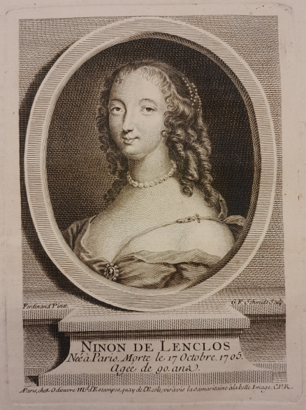
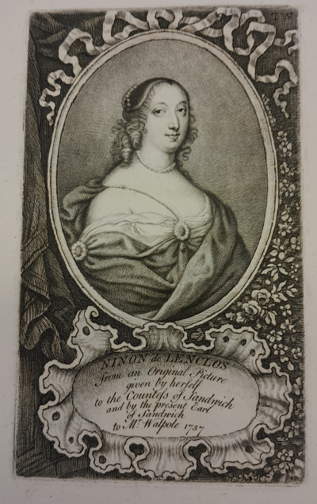
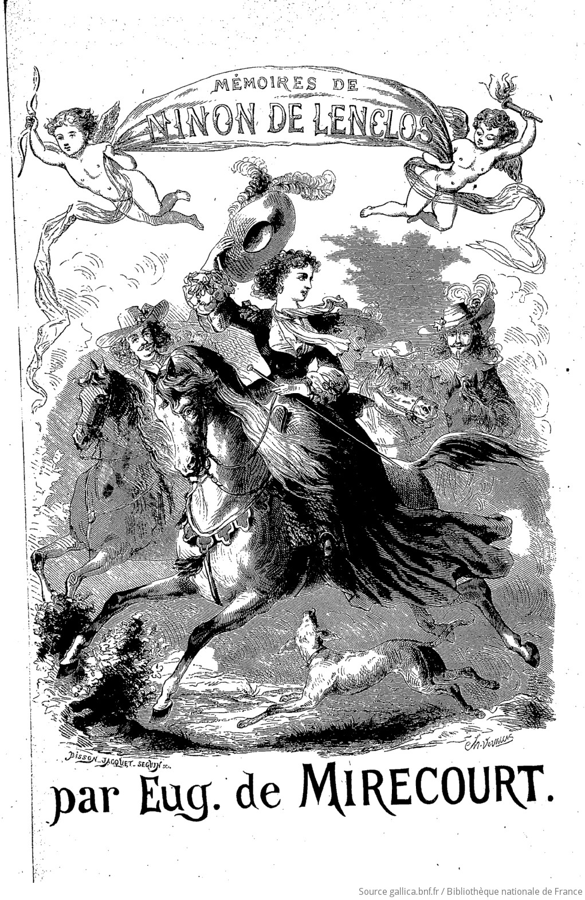
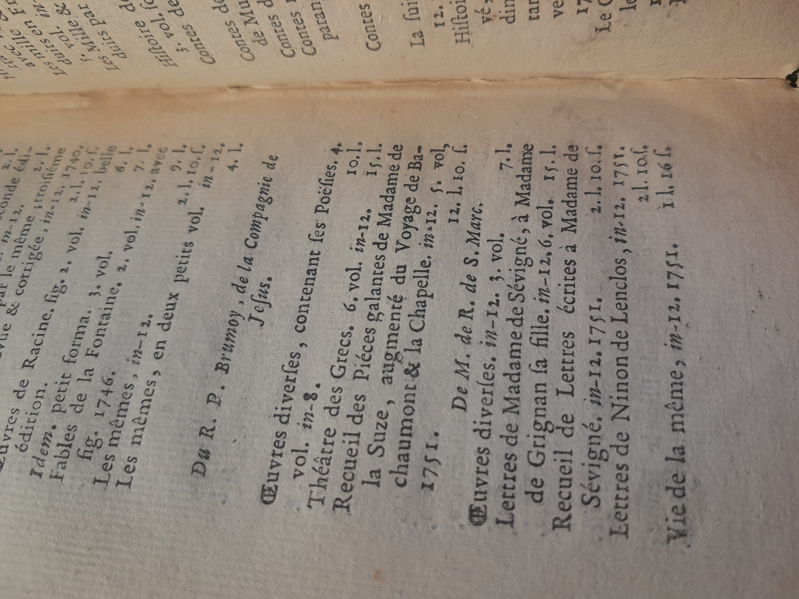
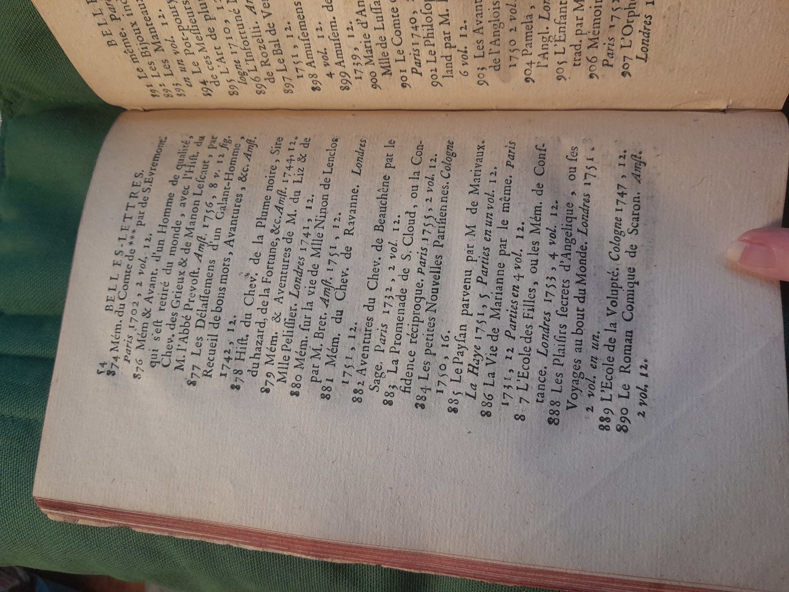
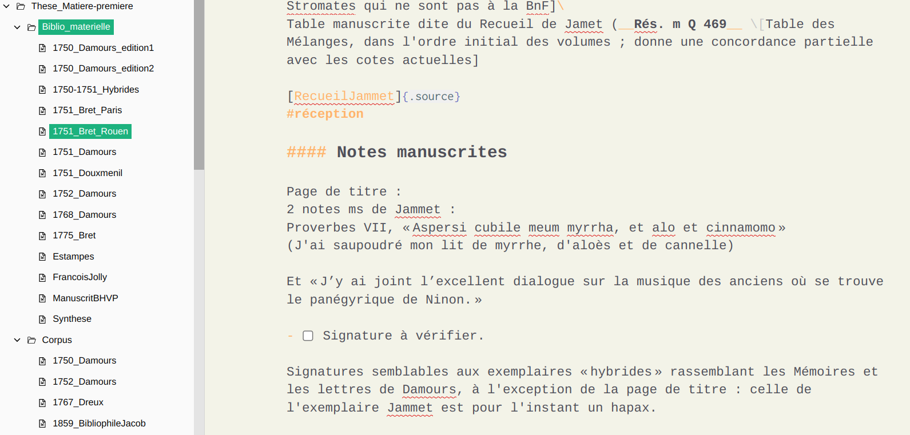
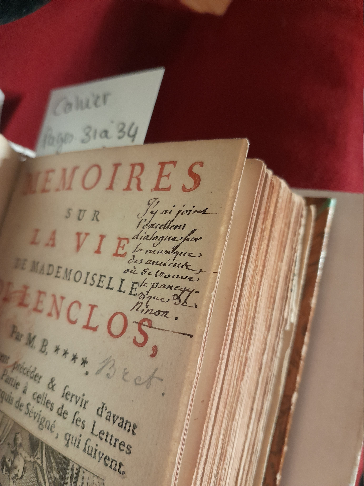
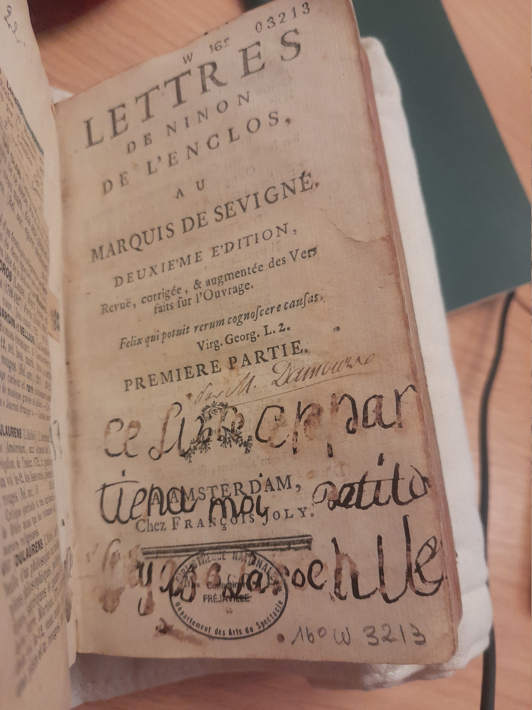
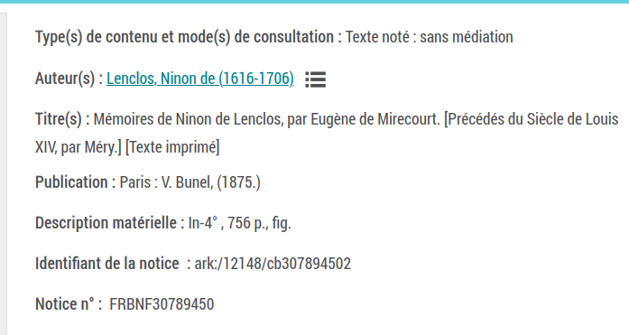
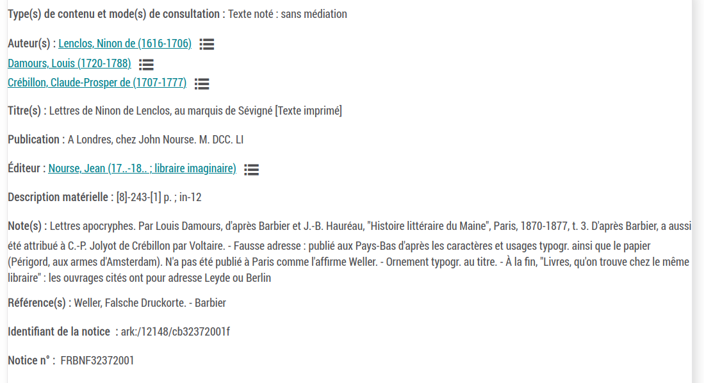

2025-05-26
Si cette mode continue, il y aura autant d’histoires de Ninon que de Louis XIV.
Voltaire1



-> Autant d’indices pour cerner et comprendre la « fabrique d’une femme illustre » et ses mécanismes.


| Contenu | Format (Outils) | Cumulonimbus |
|---|---|---|
| Notes brutes | .md (Zettlr) ; Papier | Gitlab |
| Bibliographie | BibteX (Zotero) | Synchronisation Zotero |
| Photographies | .jpg | Nakala |
| Rédaction | .md vers …? (Zettlr + Pandoc) | Gitlab |
| Présentations | .md (Quarto + Reveal) | Gitlab |
Un contre-exemple éloquent :
Les renseignements apocryphes ont autant de valeur que les autres, s’ils font bien… peu importe que presque toutes les « Lettres de Ninon » soient de Damours ou de Ségur, et que Tallemant, Chavagnac et Voltaire se contredisent… on démarque de son mieux, on transpose, on lie, on « schicksale »… et le résultat n’a besoin d’être ni original, ni personnel, ni inédit – il suffit qu’il amuse…
J. de Tinan1



Deux exemples de notices avec attributions d’auteurs problématiques :


La vie de Ninon est une suite de parenthèses, ouvertes et fermées par la volupté.
J. de Tinan1
Actualités de la Recherche en Humanités numériques